MOSSCAPE OREUM모스케이프 오름
- Location
- 경기 파주시 문산읍 장산리 초평도
- Year
- 2026
- Type
- 집합주거 · 공동체 시설
- Status
- 홍익대학교 건축학과 졸업설계
- Team
- 개인
생존을 위해 지었으나, 우연히 면역 장치가 된 마을
2050년대, AI가 사무직을 대체하고 도시는 구독료로 운영된다. 일자리를 잃고 밀려난 '데이터 난민' 200여 명이 임진강 하중도 초평도로 건너간다. 이들은 살아남기 위해 땅을 파고 섬의 나뭇가지를 엮었다. 그렇게 지은 집이, 멸균된 도시가 잃어버린 미생물 면역을 되돌려 주었다. 생존을 위해 지었으나 우연히 면역 장치가 된 마을이다.
In the 2050s, AI replaces office work and the city runs on subscriptions. Some 200 'data refugees' cross to Chopyeongdo, a river island in the Imjin. To survive, they dig the ground and weave the island's branches. The houses they build return the microbial immunity the sterile city has lost — a village built for survival that became, by accident, an immune device.

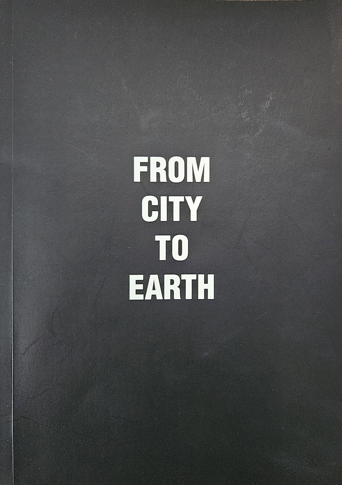
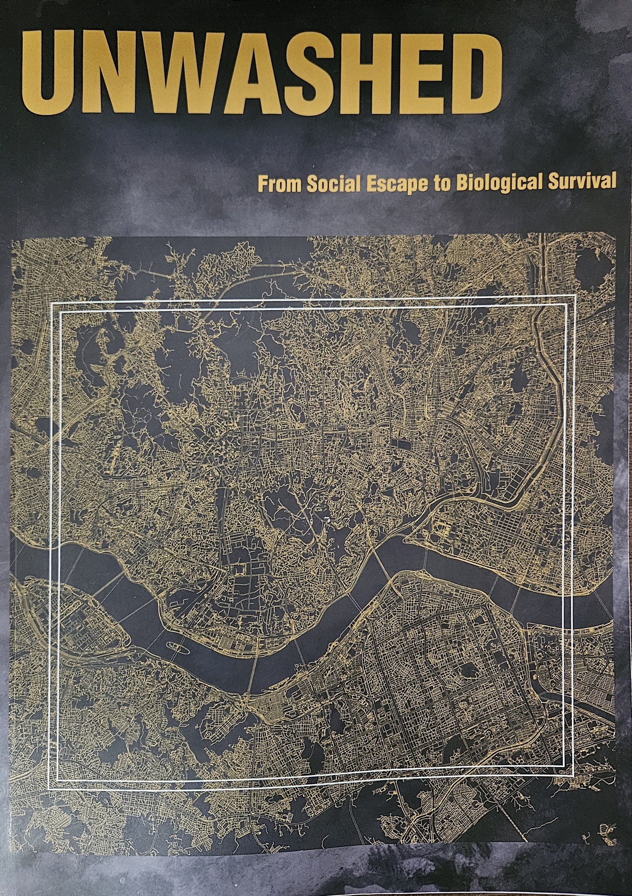
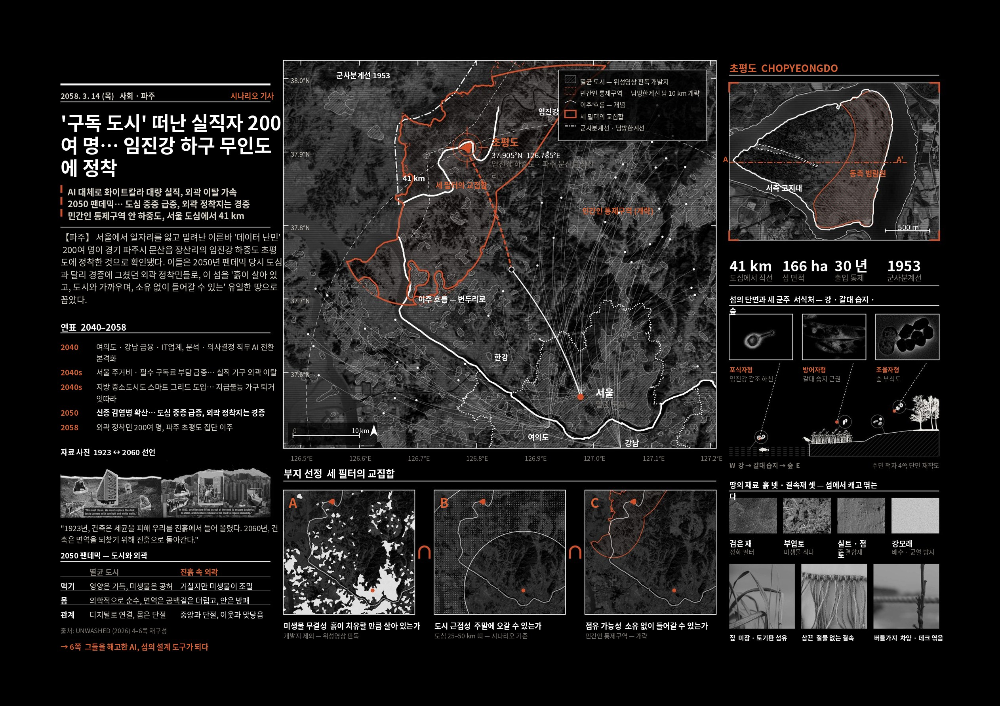
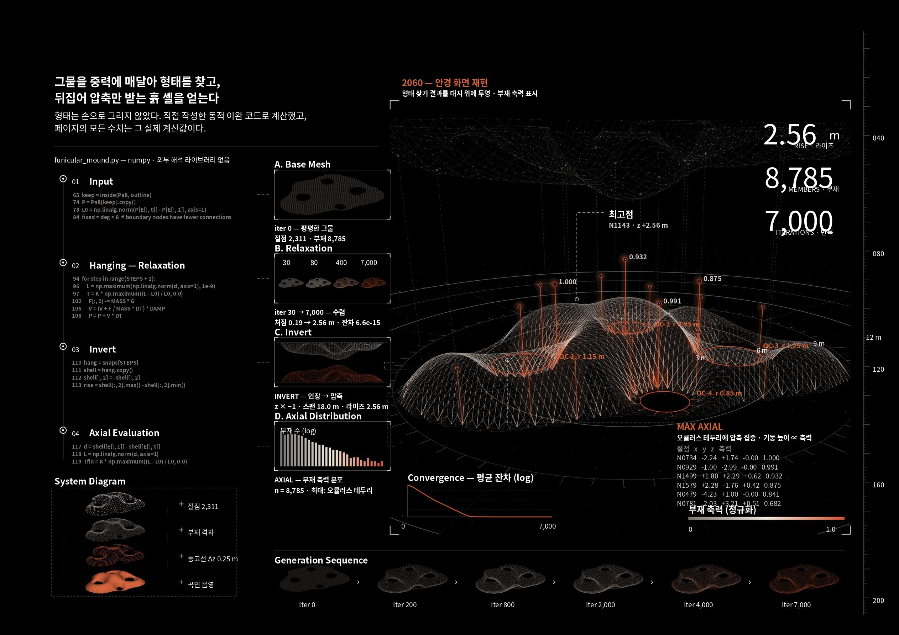
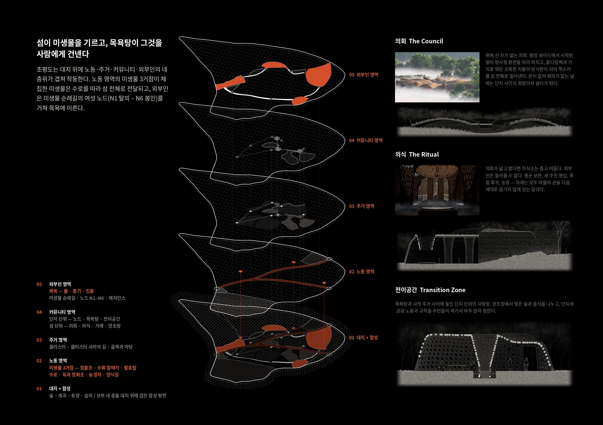
세 거점이 채집한 미생물은 재 · 숯 · 흙을 거쳐 목욕탕에 닿는다Harvest — Purify — Store — Bathe
A 수류 깔때기, B 발효탑, C 침출조. 미생물 3거점이 거둔 균은 수로를 따라 목욕탕으로 전달된다.
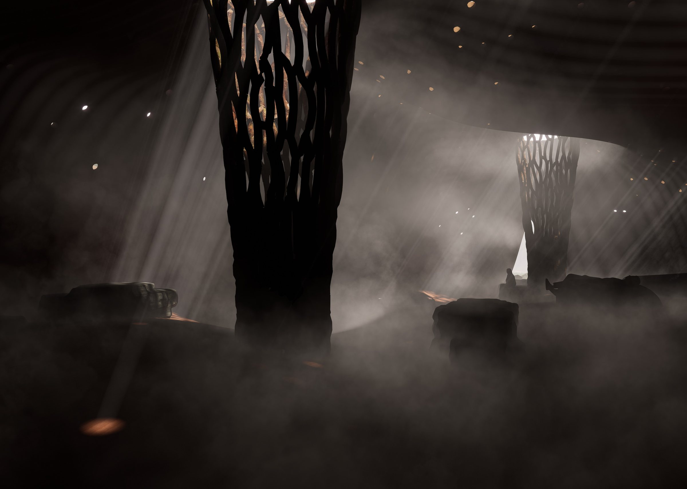
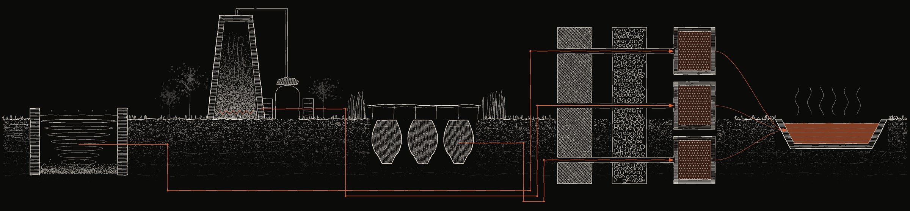
개울을 두 번 건너는 목욕탕Bathhouse Plan
리셉션에서 옷을 벗고 징검돌로 개울을 건너 욕탕으로 들어간다. 세정·온탕에서 진흙탕까지 세 공간을 지나 다시 개울을 건너면 한증막이다.
개울물이 살짝 들어오는 물가는 빨래터이자 발을 담그는 자리다. 목욕하지 않는 날에도 사람이 모인다.
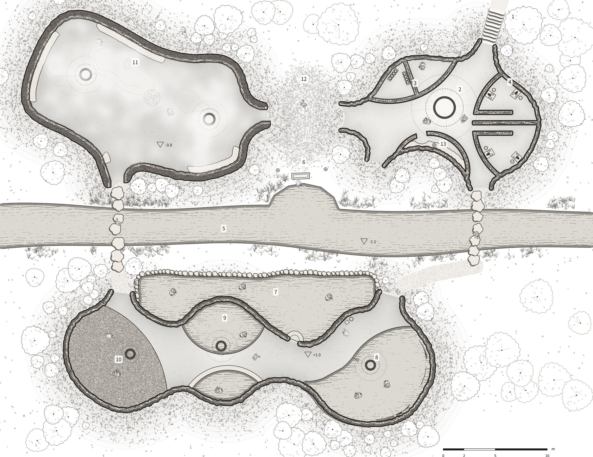
- 진입 계단
- 중정
- 탈의 · 짐 보관
- 화장실
- 개울
- 빨래터 · 발 담그는 물가
- 외부 욕탕
- 세정 · 온탕
- 미온탕 · 냉탕
- 진흙탕
- 한증막
- 이끼 마당 — 말림
- 쉼터 — 목욕 뒤 땀을 식히는 자리
가지 기둥이 받치는 흙 지붕Bathhouse Unfolded Section
욕탕은 리셉션보다 1m 높은 단에 앉고, 한증막은 개울 쪽으로 내려가 땅에 묻힌다. 공간마다 가지 바구니 기둥이 흙 지붕을 받치고, 기둥 위 지붕 구멍으로 빛이 든다. 기둥 사이로 지붕이 처지는 골에는 빗물이 모인다.
개울 수면은 리셉션보다 약 1.1m 낮다. 리셉션에서 욕탕으로, 욕탕에서 한증막으로 갈 때마다 징검돌로 개울을 건넌다.
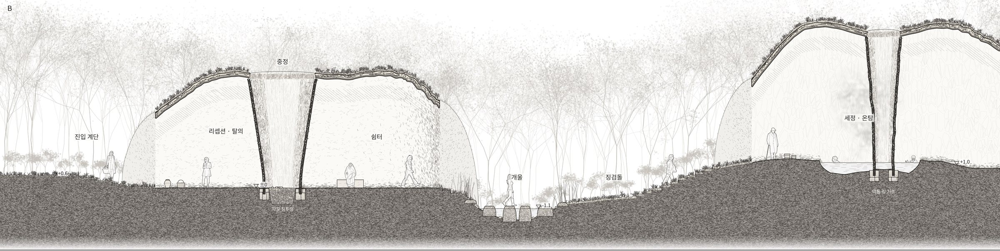
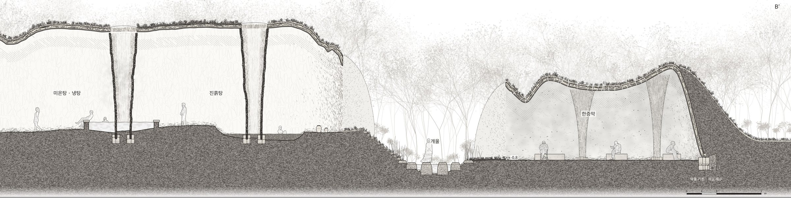
깊이로 나뉘는 집Cluster Plan
클러스터는 셀의 나열이 아니라 생존을 위한 결착이다. 진입로에서 공용 주방과 거실을 지나 가장 깊은 셀로 갈수록 공적인 곳에서 사적인 곳으로 바뀐다. 층이 아니라 대지에 닿는 깊이가 사생활의 밀도를 정한다.
원형 셀들은 서로 비켜 밀집하며 토압과 하중을 나누고, 외기에 닿는 면을 줄여 짚과 흙만으로 열을 지킨다. 방과 공용부는 두꺼운 흙다짐벽으로 나뉘고, 이 벽이 지붕 하중을 받는다.
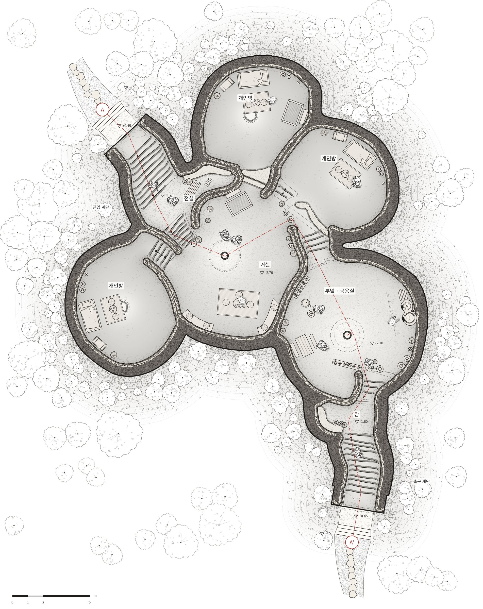

빼기의 건축Subtractive architecture · The alley
철새와 미생물이 사는 상부 생태계는 그대로 두고, 그 아래를 파내 생활 공간을 지표 밑에 묻는다. 쌓아 올리는 더하기 대신 덜어내는 빼기다. 묻힌 매스는 대지를 지열 배터리로 쓰고, 파낸 흙은 벽과 지붕의 재료로 다시 쓴다.
셀 벽이 서로 닿을 듯 마주 서며 폭 1.2 m 안팎의 마른 흙길을 남긴다. 지붕 사이로 난 좁은 하늘길에서 안개가 내려앉아 골목을 따라 흐르고, 셀이 물러선 자리에서 마당이 된다.


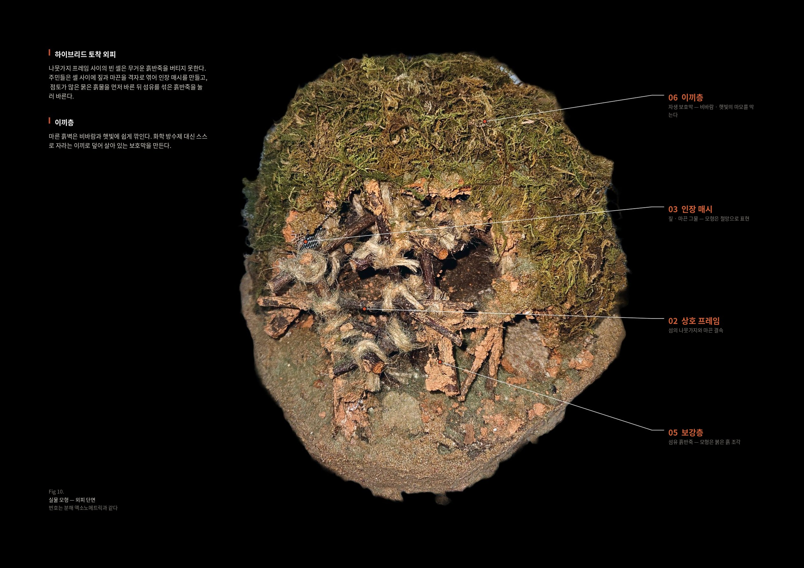
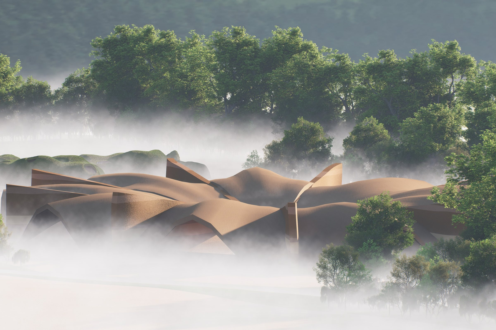
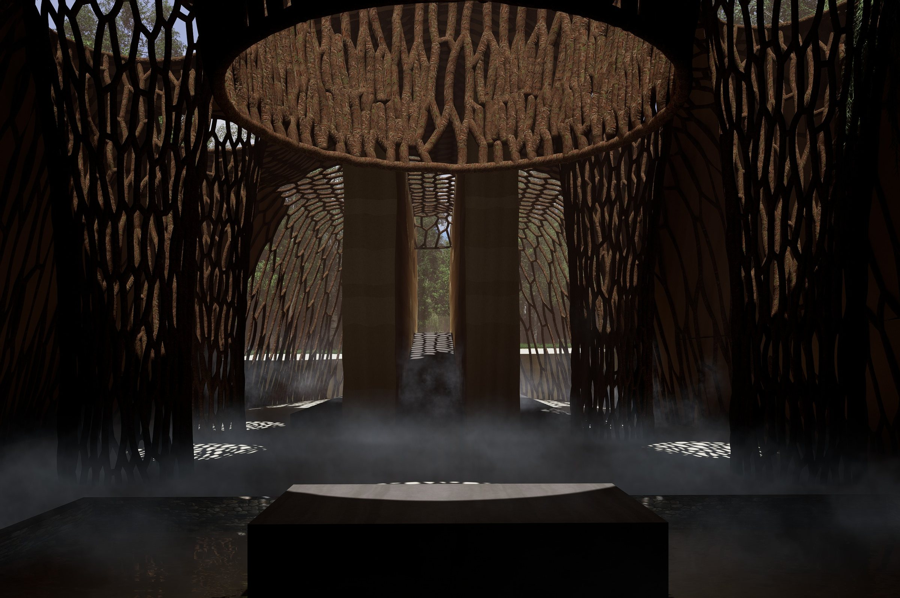